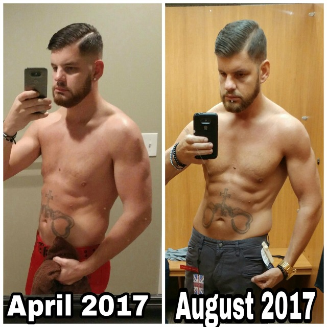
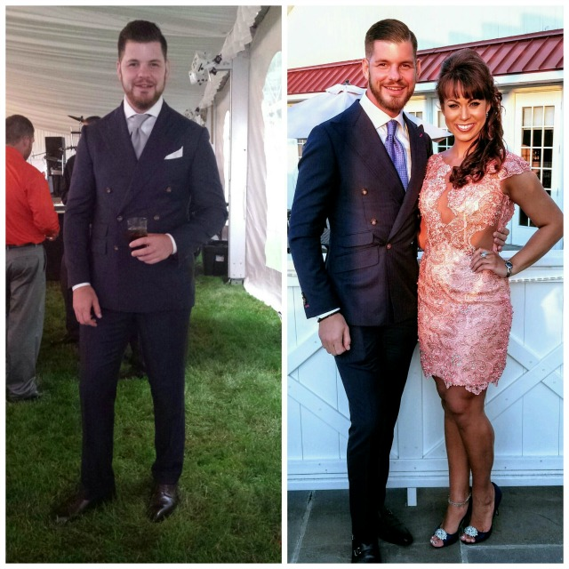

My name is Aaron. I’m 35-years-old. I live in the Lehigh Valley of PA where I am the only custom tailor. This is my story of how an innocent foray in LCHF (low carb, high fat) turned into a full blown keto lifestyle shift. What a journey it’s been and I’m only just getting started!
Ok, so let’s get the junk out of the way first. Last summer, I was freshly divorced. I had to move into a shoebox sized apartment where I fed myself a steady diet of ramen noodles, Captain Crunch, heavy imperial stouts, and copious amounts of sour candy….usually fueled by alcohol driven hunger and a new little appetite tweaker I discovered…cannabis and the munchies. It only took a few months of this type of living for me to feel incredibly sick.
When I wasn’t smoking, I was incredibly nauseous and couldn’t eat. So, I used cannabis to give myself the munchies so I didn’t feel like I was going to die. I found myself in a cycle that I didn’t like. I liked the weed, but I didn’t like the munchies. Was it the munchies or the bad food that was the problem? One night it just hit me….I hit the blunt and then thought to myself, “whoa, like maybe I should fix my diet.”
Brilliant revelation, right??
Rewind a few years back to when I was 25. I was in fairly decent shape and pretty lean. I worked out heavily and had the results to show for it. I won’t blame marriage for getting me fat, but I did indeed get fat once I got married. Steady typical SAD diet for the entire duration.
So, near the end of 2016 everyone is thinking about New Year’s resolutions to lose weight. I’m busy drinking, chasing women, and getting stoned—eating a ton of sugar and was nowhere near making that kind of resolution. I just didn’t believe I’d ever be that in-shape again. I tried working out again but it was unbearable. Geez, to even walk a few blocks on a 40 degree day made me sweat profusely so how the hell was I gonna be able to work out in a gym?! Do I just give up the booze for awhile? How about the weed? What about sugar? Admittedly, I was lost and a little hopeless but man did I love the taste of whipped cream in cappuccinos.
That got me thinking….
I had heard somewhere about adding fat to your diet and removing carbs, but from my earlier gym days, I just couldn’t make the connection. I was stuck rooted in the old, using exercise to lose weight and create a calories burned vs calories consumed thinking. Even though I never could piece together how that exactly worked, I was willing to give adding fats and cutting carbs a shot…
Enter my first foray into making bulletproof cappuccinos around mid February this year…
Delicious as ever. Never would’ve thought butter, coconut oil and stevia would taste so good in coffee. I was enjoying waking up every morning to one of these, but what surprised me was the longer period of time I could go before having to eat. I also noticed a few pounds gently slipping away and got curious…what if I add more butter to everything else? Started doing exactly that.
So, late February 2016 I was doing BP coffee every morning and butter loaded tomato soup (and crappy Campbells too!). My appetite went away, and I just let it. Little did I know that I was basically doing an intermittent fat fast. I was getting to a point where I was adding up to 6 tbsp of butter and oil plus frothed heavy cream AND egg yolks in the cappuccino but really had no idea if it was actually healthy or not, so I Googled “effects of eating too much butter” and landed on a forum post at, you guessed it, MDA.
I saw a 60-something ripped dude named Mark on the front page, plus a success story of an even older guy who was also ripped. The competitor in me thought, “Hey if these old dudes are ripped off whatever this diet is, then wtf is my excuse?!” So I read and read and read until I had the start of the puzzle completed in my mind. I knew I had to act.
Upon realizing that this was a whole foods diet, I knew I’d need to learn how to cook. What a mountain of learning that was. I went crazy. Purged my cupboards of all sugar, grains, and bad oils. Stopped eating out almost immediately and started cooking. Wow, to eat whole foods even fruits and not get violently sick to my stomach? Oh what a feeling.
By the end of March 2016, I had dropped nearly 45 lbs. My girlfriend left for a 2 week trip to Mexico in early March. She had noticed the weight loss but we had no idea what was actually happening. When she left early March, I was wearing 38s. When she got back I was in 34s.
I thought I was done there and, quite frankly, if that’s where my weight loss journey had stopped, I would’ve been quite content and proud of myself. Everyone around me was complimenting me and some even expressing concern that I was getting too thin too fast. I thought there was no such thing and I could still see good amounts of fat deposits that I would be happy to be without so I kept it up. More primal cooking and eating. I was on my way to becoming fat adapted and I wouldn’t be stopped!
I didn’t exercise once during the first 2 months. I was basically sedentary. I really didn’t have the energy to do anything but that changed pretty fast. I tried mountain biking again and felt like I was some kind of super human. However, the next few times I rode, I experienced really bad bonking and wondered what was going on. How did I have energy before but now I’m bonking periodically? I now know I was pushing too hard during the fat adaptation phase creating a demand for glucose….I used a bit of fruit to push through this.
By late April 2016, I was looking and feeling good but I was also plateaued. I could see more fat needed to come off but wondered why the BP coffee and whole foods diet wasn’t working as well. I researched more and discovered the power of real intermittent fasting.
I kicked out the BP coffee in place of lightly sweetened black coffee in the mornings then did a typical fast-breaking in the afternoon with a salad or eggs etc then a more legit meal later on in the evening. I also started sprinting.
By early summer I was wearing my jeans on an 80 degree day and realized that I wasn’t sweating hardly at all. The man that used to sweat on a 40 degree day was now borderline cold in the middle of the summer. Oh well, I saved on my AC bills and got over it. I also noticed that those jeans felt a little loose. I thought, “no way I’m actually in 32s now.” Sure enough, I was able to fit nicely into 32s. Lesson learned…when you’re on the keto weight loss slide, wait to buy a lot of new clothing.
By midsummer, I returned to my lifting habits. Thankfully, I had a base of knowledge on how to lift so I experienced results very quickly. My thinking during all of this was, “let’s see how low carb I can actually be without experiencing real fatigue.” In essence, I only wanted enough carbs as I possibly needed and not one gram more. I found myself able to ride my bike and lift with a fair amount of intensity…even in a fasted state!
By late summer (August 2017), I wondered again if it was just my new stretchy skinny fit 32s needed to be washed and dried to give them that tight-ish post dryer fit again or if, God forbid, my entire new stash of 32s was too big. Sure enough, I went and tried on a pair of 30s and whoa they fit! I figured since I can see feel my pelvic bones poking off the sides of my hips along with a full blown 6 pack looming to 8 pack abs (and also the total extinction of my ass) that I must be at that often desperately sought after “ideal body composition.” The ripped guy you see in the after pics was taken on that day.
BOOM! I knew I had arrived. I knew I was fat adapted. I had developed a system of food shopping and meal prep to fully support it. I knew my life from there on out would never be the same. Going Primal is one of the best decisions, if not the best decision, I have ever made for my personal health.
But….what about the ketogenic diet? I was very curious about it, but it seemed like a fringe version of primal to me and a lot of the recipes I looked up were loaded with strange ingredients that didn’t seem to be in line with a Primal way of eating. However, right around this exact time (about a month or so ago), I started seeing Mark posting a lot about keto and his own experiment with it. When the announcement came for the The Keto Reset Diet book, I knew I was on the right track.
The Keto Reset Diet was released on my birthday. I don’t like to read but I got it for free by starting up with Audible. Listening to the book gave me a much better understanding of how each of the various macros affect the brain and the body. I realized that my eating habits were pretty close to what was in the book so I decided then and there that I will likely stay in the “keto zone” for the rest of my life. I will be going in and out of keto for the purpose of maximizing metabolic efficiency. Wow…it seemed so crazy that it was even possible that I went from being a completely sick and depressed fat guy knowing nothing about food to a ripped fat- burning beast who’s not so bad in the kitchen in the span of half a year!
On my birthday, I posted the before and afters to my Instagram and announced that I would be adding keto-based weightloss consulting to my services as a tailor. I have a lot of fat clients who have no time but lots of money, so why not monetize my experience, make money off of helping them lose the weight and make even more money selling them new clothing?! As if I wasn’t niched out enough…
So there ya have it. Now I’m off to the keto races, and I think I’ll change a few lives and get a little richer while I’m on the way there. Yes, that means I signed up to become a Primal Health Coach.
Here are a few bullet points of the positives and negatives I have experienced along the way plus a few tips:
Positives:
– Way more energy
– Much better sleep
– Obvious improvements to physique and exercise performance
– Super speedy recovery times and no jet lag!
– Effortless appetite management
– Ability to fast for 24, 48, or even 72 hours…at will
– Radically improved cognition
– No more depression
– The tug of other “addictive behaviors” significantly reduced. In fact, I quit drinking permanently on August 1st of this year.
– I still partake in cannabis consumption regularly and indulge in the munchies right along with it….guilt free! It plays well with this diet!
Negatives:
– Getting fat and losing weight is expensive. The food replacements, cooking equipment, and time spent figuring it all out and dialing in how much to buy and eat was a costly endeavor top to bottom.
– I completely rendered a large custom wardrobe useless and had to replace all of it. So will you.
– I’m definitely one of those annoying health nuts now and have had to figure out all kinds of social behaviors to manage the awkwardness.
– There really aren’t many other negatives.
Tips:
– Read The Keto Reset Diet
– Let the diet do the work. Stay low and slow and don’t try to exercise too hard until you’re ready especially in the beginning. You will feel the energy surging through you but ignore it for a while and take it easy.
– Get your macros right and don’t slouch on green veggies, salt and other minerals.
– Watch your protein intake. No need to raise it to the roof.
– “Fake Keto” recipes out there for replacing common comfort foods usually using high amounts of dairy and almond/coconut flour and fruit are only for the truly fat-burning, keto-adapted, carb-tolerant beasts among us. Do yourself a favor and go therapeutic keto from the start with proper macros and fats from mainly animal sources. Eat those greens!
– Ditch the artificial sweeteners and train out sweet tastes from your palate at least for awhile.
– Fasting protocols maybe work better for men. Women might want to start eating proper macros and let the brain/body do the work before getting into IF protocols (just my opinion).
– Sprint while fasted to bust plateaus.
– Got the keto flu? Eat some avocados or supplement with apple cider vinegar, pink sea salt, and cream of tartar (high potassium) mixed in water. Then get over it and go sprint.
– Stop waiting and get on board the keto train! Being keto-adapted is one helluva ride!
Aaron H.
Available everywhere books are sold